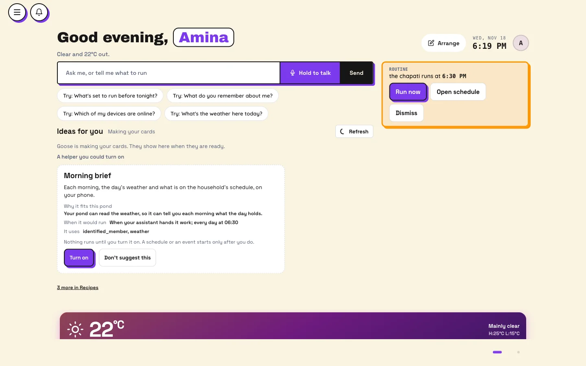
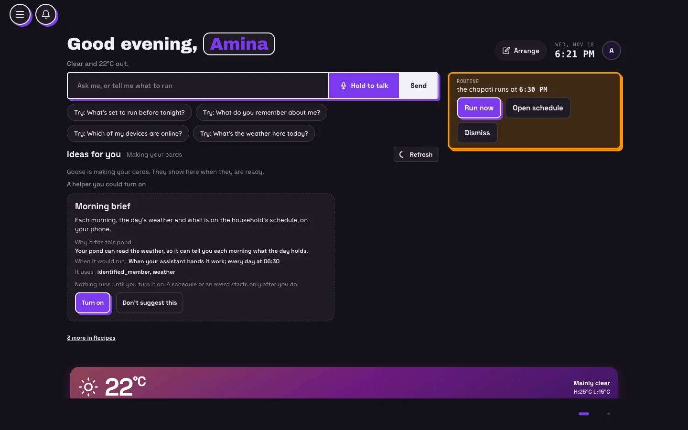
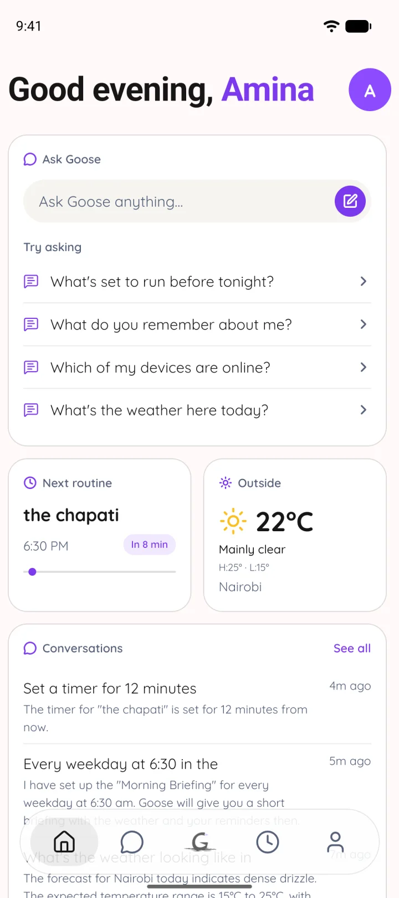
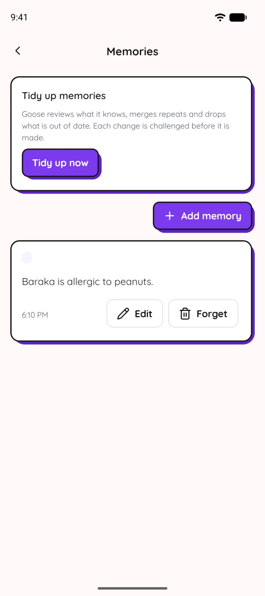
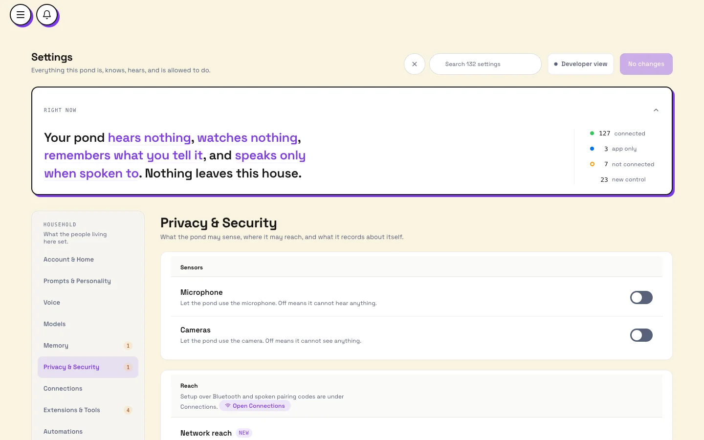
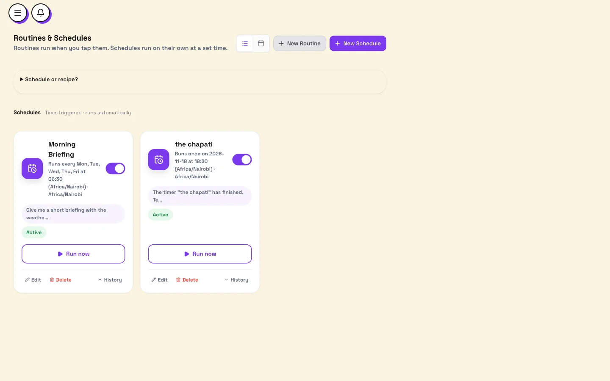
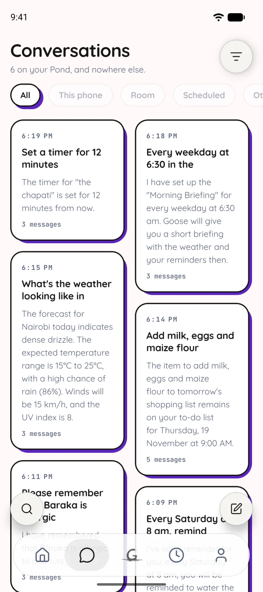
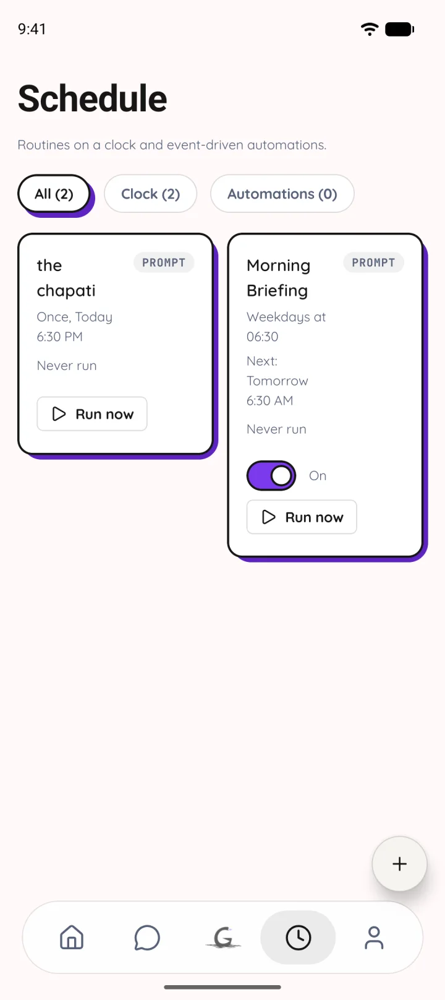

Your voice stays home
Wake word, speech, the model and memory all run on the box. A build test fails if any code makes an HTTP call outside the egress tracker.
Goose In A Pond



Goose In A Pond runs voice, language, memory and device control on a board you can hold. Goose On The Go puts it in your pocket. Nothing leaves the house.
Built on Goose, the open-source agent and MCP client. Apache-2.0.
Wake word, speech, the model and memory all run on the box. A build test fails if any code makes an HTTP call outside the egress tracker.
Switch the pond to Offline and it refuses everything but loopback. The model, voice, memory, schedules, cameras and Matter devices carry on.
Apache-2.0, with 17 MCP servers and 74 tools you can read, fork and add to. No vendor can change the terms on you.
Goose In A Pond and Goose On The Go
Screens from the current builds of both apps, talking to a pond running Gemma 4 E4B on the device.
Ask in plain words.
Goose picks the tool and shows it.

Your pond, in your pocket.
No cloud account in between.
Say “hey goose”.
It hears you on the device.

It remembers what matters.
Fix a memory, or make it forget.

Privacy, in plain words.
Nothing leaves this house.

Paired with a code,
checked against the pond’s own screen.

Routines, set by asking.
A morning briefing and a kitchen timer.

A greeting, the weather outside, the next routine, and things to ask written out for you.
The same home in the dark theme, for a panel that shouldn’t light up the room.
Ask for a Saturday reminder and Goose sets it with its schedule tool, then shows what it set under the reply.
A weekday 6:30 morning briefing and a chapati timer, both set by asking Goose.
Settings open on one sentence about the pond: it hears nothing, watches nothing, and nothing leaves this house.
The orb listens for “hey goose”. The wake word, speech and the reply all run on the box.
Things to ask, the next routine and the weather, straight from the household’s own pond.
Every conversation, kept on the pond and nowhere else.
Goose sets a Saturday reminder to water the tomatoes, and the reminder it set shows under the reply.
Baraka is allergic to peanuts. Edit a memory, or have Goose forget it.
A one-off chapati timer and the weekday Morning Briefing, each with a Run now button.
Three fingerprint groups to match against the pond’s own screen. No cloud account.



The surfaces people use, Goose and its MCP servers in the middle, and llama.cpp underneath, in the same process as the agent.

MCP servers and 74 tools, run as Goose builtin extensions over an in-memory duplex. No subprocess, no port.
The pond’s whole budget on an 8 GB Jetson Orin Nano: model, speech, embedder and camera.
Faster decode on the Orin with a multi-token-prediction drafter, with token-identical output.
Jetson Orin Nano 8 GB · sm_87
Apple silicon · M-series
Raspberry Pi 5 · no GPU offload
Everything that makes the pond, in the open.
The pond: Rust server, desktop app and kiosk, voice stack, and all 17 MCP servers.
jarida-io/goose-on-the-goThe phone app for iOS and Android: pairing, chat, voice, schedules and the home.
jarida-io/ink · npm @jarida/inkThe design library both apps and this page are drawn with: tokens, headless behaviour, React, React Native and plain CSS.
jarida-io/llama-cpp-rs-giapRust bindings for llama.cpp with OpenAI-style chat templates and MTP speculative decoding together.
jarida-io/GooseOur tracked fork of the AAIF agent and MCP client, pinned by the pond as a submodule.
Most “smart” home assistants need a live connection to someone else’s cloud, ship your voice to a data center you’ll never see, and go quiet the moment your internet does. This talk is about what it took for a five-person team to build the alternative on Goose and MCP: how Goose learned to listen for its own name, how it runs the home, and how it gets better over time without ever phoning home.
Liz Wangui · Purity Wanjiru · Emmanuel Oyugi · Africia Kerubo · Jerry Ochieng
 pond.jarida.io
pond.jarida.io